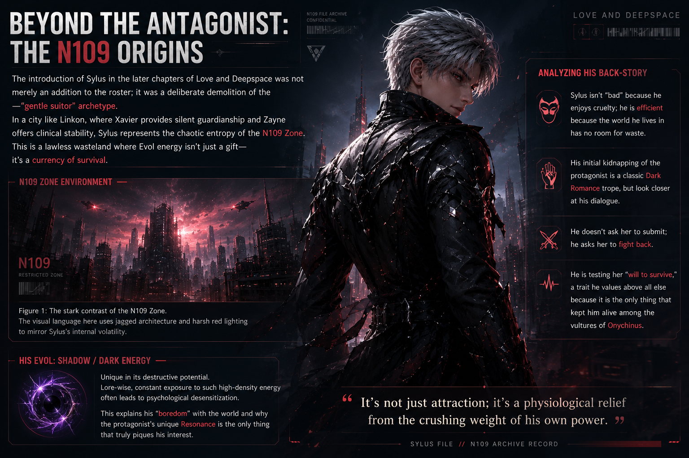
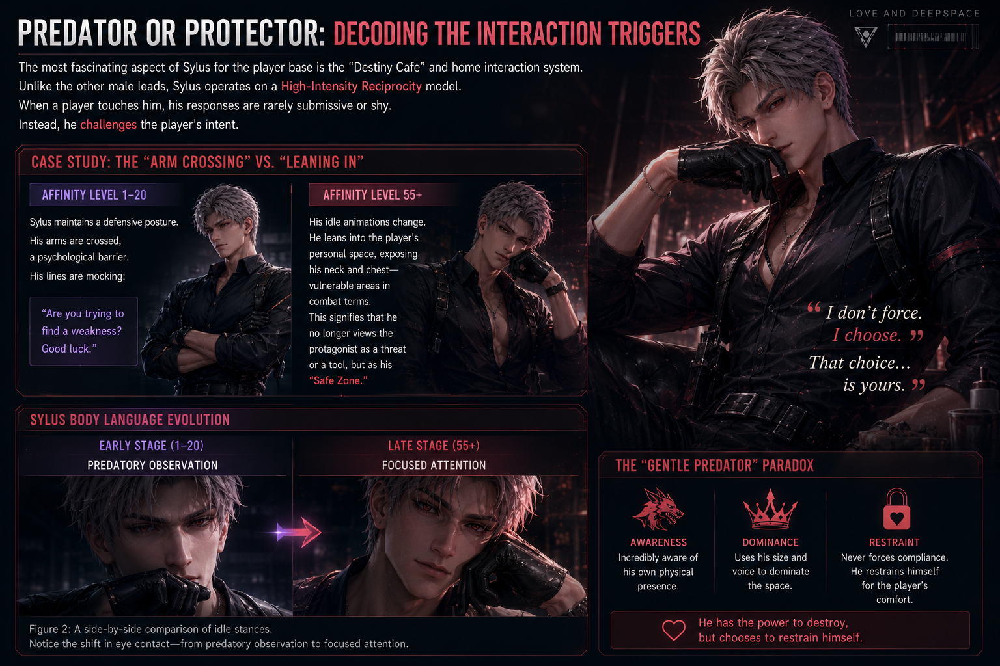
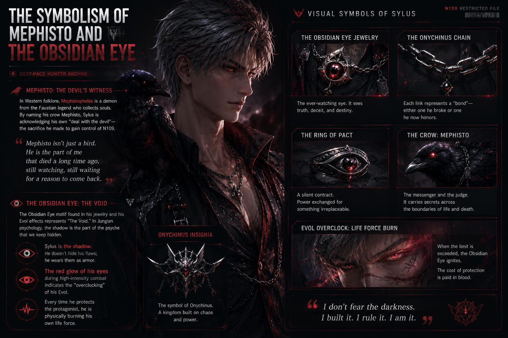

"To survive the N109 Zone, you must become the monster. But to love within it, you must remember the human."
The introduction of Sylus in the later chapters of Love and Deepspace was not merely an addition to the roster; it was a deliberate demolition of the "gentle suitor" archetype. In a city like Linkon, where Xavier provides silent guardianship and Zayne offers clinical stability, Sylus represents the chaotic entropy of the N109 Zone.

Figure 1: The stark contrast of the N109 Zone. The visual language here uses jagged architecture and harsh red lighting to mirror Sylus's internal volatility.
Analyzing his back-story involves looking at the scars he carries. Sylus isn't "bad" because he enjoys cruelty; he is efficient because the world he lives in has no room for waste. He is testing her "will to survive," a trait he values above all else.
His Evol—Shadow/Dark energy—is unique in its destructive potential. Lore-wise, constant exposure to such high-density energy often leads to psychological desensitization. This explains his "boredom" with the world and why the protagonist's unique Resonance is the only thing that truly piques his interest.
The most fascinating aspect of Sylus for the player base is the "Destiny Cafe" and home interaction system. Unlike the other male leads, Sylus operates on a High-Intensity Reciprocity model.
At Affinity levels 1-20, Sylus maintains a defensive posture. His arms are crossed, a psychological barrier. His lines are mocking: "Are you trying to find a weakness? Good luck."
However, by Affinity level 55+, his idle animations change. He leans into the player's personal space, exposing his neck and chest—vulnerable areas in combat terms. This signifies that he no longer views the protagonist as a threat or a tool, but as his "Safe Zone."

Figure 2: A side-by-side comparison of idle stances. Notice the shift in eye contact—from predatory observation to focused attention.
Furthermore, his secret lines triggered by specific touches (like his tie or the holster) reveal a man who is incredibly aware of his own physical presence. This is the "Gentle Predator" paradox: he has the power to destroy, but chooses to restrain himself for the player's comfort.
No analysis of Sylus is complete without discussing his mechanical companion, Mephisto. In Western folklore, Mephistopheles is a demon from the Faustian legend who collects souls.
The Obsidian Eye motif found in his jewelry and his Evol effects represents "The Void." In Jungian psychology, the shadow is the part of the psyche that we keep hidden. Sylus is the shadow.

Figure 3: Detailed view of the Onychinus insignia and Sylus's custom accessories.
Why has Sylus overtaken the popularity of more "wholesome" characters? The answer lies in the Agency of the protagonist. In her relationship with Sylus, the MC is forced to grow. This creates a "Power Couple" dynamic where both parties are equally dangerous.
Sylus's popularity also stems from his Emotional Honesty. He doesn't speak in riddles like Rafayel or keep secrets like Xavier. He is brutally honest about his intentions.
His specific card "No Restrained Love" and others emphasize the theme of 'Sins.' By embracing the role of the sinner, he frees the player from the burden of being "perfect."
Ultimately, Sylus is the Protector who doesn't use a shield, but a sword. He doesn't stand in front of you; he stands beside you, watching you take down your own enemies while he handles the ones in the shadows. He is the personification of the N109 Zone's only rule: Trust no one, except the one who has seen your darkest side and didn't look away.